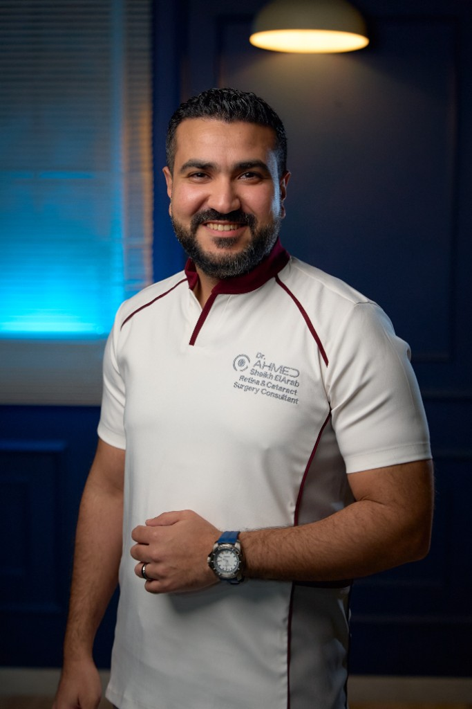

Emergency Eye Servicesخدمات العيون الطارئة
Emergency Eye Servicesخدمات العيون الطارئة
Immediate attention for urgent eye emergencies when you need it most.العناية الفورية بحالات طوارئ العيون عندما تحتاجها.
Eye emergencies can happen unexpectedly and require immediate attention. Dr. Ahmed Sheikh Elarab offers prompt, professional emergency eye services to address urgent conditions and prevent long-term damage.
Common eye emergencies
- Eye injuries: from foreign objects to blunt trauma.
- Sudden vision loss: rapid assessment and treatment.
- Severe eye pain: diagnosis and management of infections or inflammation.
Our emergency protocol
- Rapid response for urgent cases.
- Advanced diagnostics with modern equipment.
- Comprehensive follow-up care.
قد تحدث حالات طوارئ العيون بشكل مفاجئ وتتطلب تدخلاً فورياً. يقدّم الدكتور أحمد شيخ العرب خدمات طوارئ عيون سريعة ومهنية لمعالجة الحالات العاجلة والحد من أي ضرر طويل الأمد.
حالات الطوارئ الشائعة
- إصابات العين: من جسم غريب إلى صدمات مباشرة.
- فقدان مفاجئ للرؤية: تقييم وعلاج سريع.
- ألم شديد في العين: تشخيص وعلاج الالتهابات والعدوى.
بروتوكول الطوارئ
- استجابة سريعة للحالات العاجلة.
- تشخيص متقدم بأحدث الأجهزة.
- متابعة شاملة بعد العلاج.
